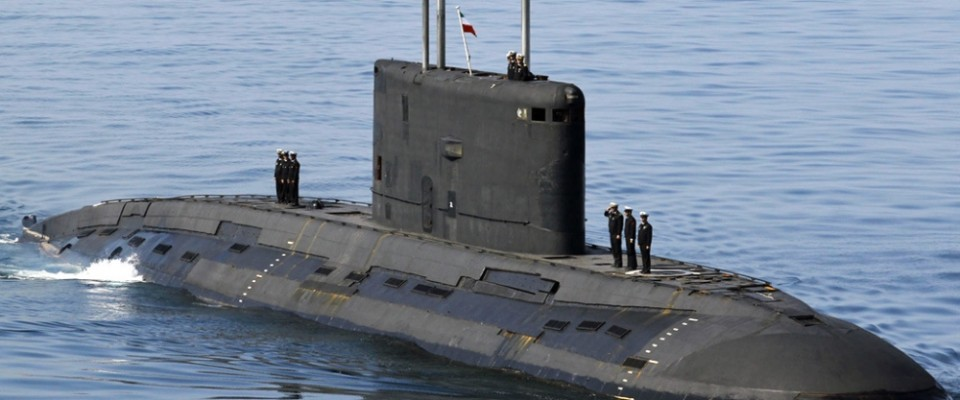
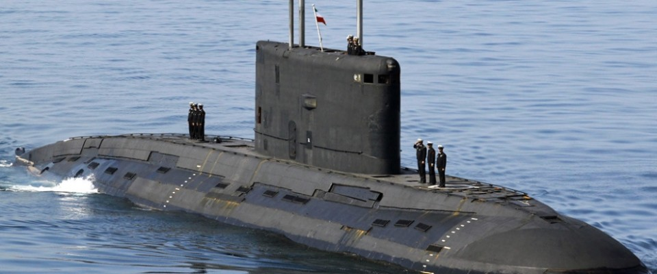

INDIAN NAVY

 



ROLE OF NAVY
The full range of operations in which a nation's naval forces may be involved
is vast, ranging from high intensity war fighting at one end to humanitarian
assistance and disaster relief operations at the other end. This broad continuum
of operations can be broken down into distinct roles, each demanding a specific
approach to the conduct of operations.
Accordingly, the four main roles envisaged for the IN are as follows :-
THE MILITARY ROLE
THE DIPLOMATIC ROLE
CONSTABULARY ROLE
BENIGN ROLE
Copyright 2018
This Page is desighned by Amit Geed